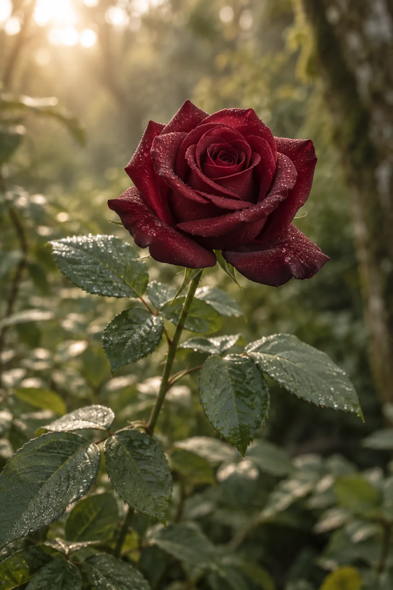
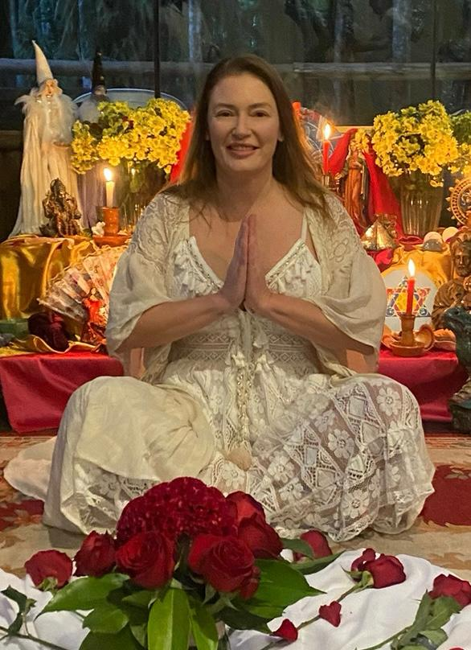

Acolhimento
Um espaço para chegar como você é, conversar, fazer perguntas e conhecer a proposta do Instituto.
MEDICINAS SAGRADAS DA FLORESTA
Um espaço de acolhimento, espiritualidade e reconexão com a natureza e com a própria jornada.

O INSTITUTO
O Instituto Florescer é um espaço dedicado a vivências espirituais e ao encontro com as Sagradas Medicinas da Floresta. Aqui, cada pessoa é recebida com respeito à sua história e ao seu tempo.
Em Laranjeiras do Sul, no Paraná, o Instituto reúne pessoas em torno de uma busca por presença, escuta e conexão. As cerimônias acontecem em meio à natureza, na Casa Cielo de Los Abuelos, em Rio Bonito do Iguaçu.
Em outubro de 2026, o Instituto celebra dois anos de caminhada.
NOSSA ESSÊNCIA
O florescimento começa no cuidado com a experiência de cada pessoa.
Um espaço para chegar como você é, conversar, fazer perguntas e conhecer a proposta do Instituto.
As Medicinas Sagradas da Floresta são apresentadas com seriedade e respeito ao contexto espiritual das vivências.
Um convite à escuta interior e à reflexão, reconhecendo que cada jornada tem seu próprio ritmo.
VIVÊNCIAS
O Instituto realiza cerimônias com Ayahuasca, rapé e sananga. A condução é de Jeane Severina Prochinski, guardiã das Sagradas Medicinas da Floresta.
As cerimônias acontecem aos sábados, com início às 20h, e seguem até o amanhecer. Antes de participar, converse com o Instituto para receber as informações e orientações necessárias.
COMO PARTICIPAR
Quer conhecer uma vivência? Fale diretamente com o Instituto para saber sobre as próximas datas, orientações e condições de participação.
Conte que deseja conhecer o Instituto e tire suas primeiras dúvidas pelo WhatsApp.
Pergunte sobre preparo, cuidados individuais, disponibilidade e a confirmação do local da cerimônia.
Com as informações recebidas, você poderá decidir se este é o momento de participar.
As vivências têm caráter espiritual e não substituem atendimento médico, psicológico ou outros cuidados de saúde.

QUEM CONDUZ
Professora, fundadora, presidente e dirigente espiritual do Instituto Florescer de Laranjeiras do Sul.
Jeane estuda as Medicinas Sagradas da Floresta desde 2020. Descreve-se como curandeira de si mesma, em contínuo desenvolvimento espiritual, e guardiã dessas medicinas.
É curandeira ayahuasqueira iniciada e mentorada por Rex Thomas Okabue e Ministra Xamã do Shamanic Dream Institute pelo Instituto Rex Thomas. Conduz e apoia cerimônias e vivências transformadoras.
Apometria · Nexus Therapy · Triângulo Sistêmico · Tantra · Reiki
Toda jornada de florescimento começa com a coragem de se encontrar.
UM CONVITE AO FLORESCIMENTODÚVIDAS FREQUENTES
Se não encontrou a resposta que procura, entre em contato com o Instituto. Cada participação merece uma conversa atenta.
Enviar uma dúvidaNa Casa Cielo de Los Abuelos, no alagado do Rio Bonito do Iguaçu, no Paraná. Confirme com o Instituto o ponto exato e as orientações de chegada antes da vivência.
As cerimônias ocorrem aos sábados, começam às 20h e seguem até o amanhecer. Consulte o Instituto para confirmar as próximas datas e a disponibilidade.
As medicinas informadas pelo Instituto são Ayahuasca, rapé e sananga. Tire suas dúvidas sobre a vivência diretamente com a equipe antes de participar.
Entre em contato com o Instituto antes de confirmar a participação. Compartilhe suas dúvidas e informações relevantes sobre sua saúde e medicamentos para receber orientações individuais. Em caso de questões de saúde, converse também com um profissional habilitado.
O endereço divulgado pelo Instituto fica na Rua Barão do Rio Branco, 2961, em Laranjeiras do Sul. As cerimônias acontecem em Rio Bonito do Iguaçu. Confirme previamente o local de qualquer encontro.
ENTRE EM CONTATO
Para conhecer as vivências, tirar dúvidas ou saber as próximas datas, fale diretamente com o Instituto Florescer.
Rua Barão do Rio Branco, 2961
Laranjeiras do Sul · PR · CEP 85301-030
Casa Cielo de Los Abuelos
Alagado do Rio Bonito do Iguaçu · PR